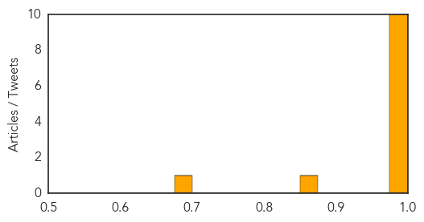
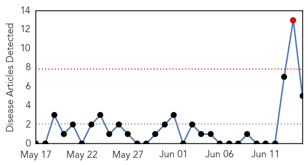

Chikungunya
30-Day Web Trend
10 alerts, 1 warnings

30-Day Twitter Trend
1 alerts, 0 warnings

Article Locations

Article Confidences
Top Articles:
- 0.999
- Incurable chikungunya virus spreads in US, at least 6 states affected — RT USA
- 0.997
- Dengue-like chikungunya virus reported in El Salvador
- 0.997
- Chikungunya virus hits North Carolina, Tennessee, other U.S. states
- 0.997
- US Virgin Islands confirms 1st chikungunya case
- 0.996
- US issues Chikungunya virus travel alert after more cases detected in Caribbean
- 0.996
- Chikungunya Virus: Cause for Concern in the United States
- 0.993
- El Salvador health officials diagnose 1,200 people with chikungunya: Report
- 0.993
- Doctors, scientists concerned over chikungunya virus outbreak
- 0.992
- Cases of mosquito-borne chikungunya virus appearing in US
- 0.984
- New mosquito-borne virus appears in U.S.
- 0.867
- Floridians urged to guard against mosquitoes
- 0.691
- Tropical ailment shows up in R.I.
Top Tweets:
-
No tweets found for Jun 15, 2014
Pertussis
30-Day Web Trend
1 alerts, 0 warnings

30-Day Twitter Trend
0 alerts, 0 warnings

Article Locations

Article Confidences

Top Articles:
Top Tweets:
-
No tweets found for Jun 15, 2014